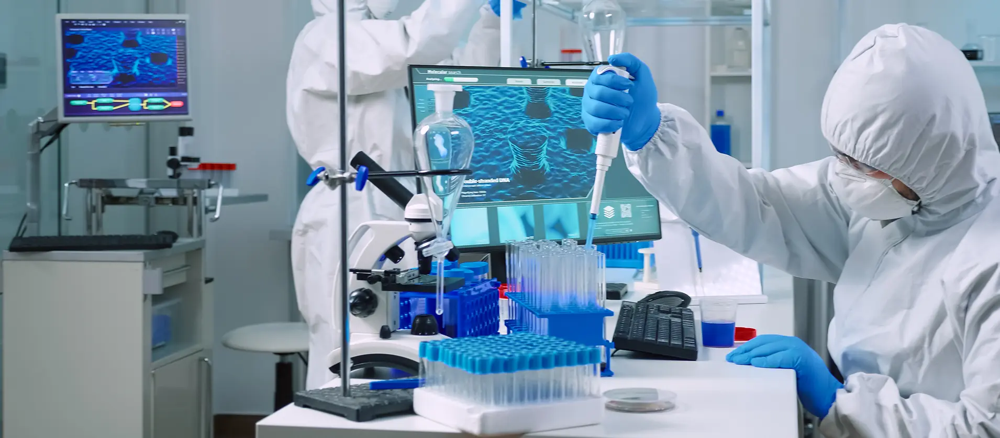
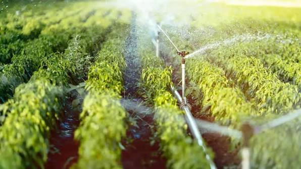
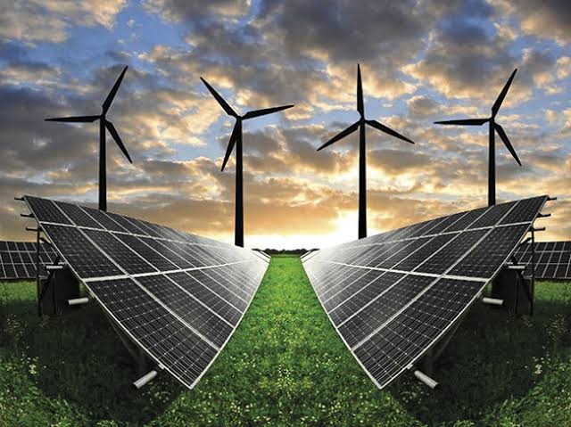

Tecnología
Desarrollo de software, servicios digitales y soluciones tecnológicas.
Conocé los principales sectores productivos que impulsan la economía de Costa Rica.
Costa Rica cuenta con diferentes industrias que generan empleo, innovación y oportunidades.
Desarrollo de software, servicios digitales y soluciones tecnológicas.

Investigación, dispositivos médicos y soluciones para el sector salud.

Producción agrícola, alimentos y productos para exportación.

Desarrollo de tecnologías sostenibles y aprovechamiento de recursos renovables.
Descubrí cómo los sectores productivos de Costa Rica ofrecen nuevas oportunidades para empresas e inversionistas.